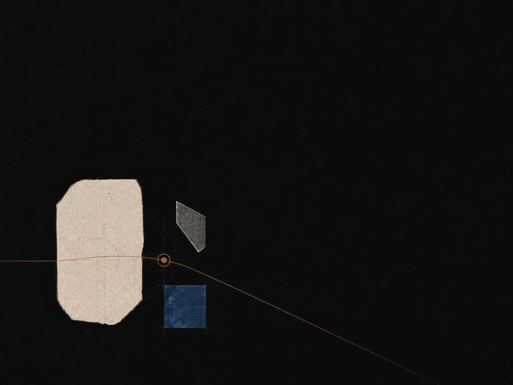

Questions over performance
We design for intellectual honesty: it should be safe to begin with an incomplete thought. Our interface rewards the next question you can articulate, not the longest possible output.
Company
We are making a quieter kind of AI companion: one that rewards curiosity, preserves context, and helps people form their own view.
Why Socrates
AI can make it easy to move on too soon. We believe its better role is to create room for reflection, practice, and stronger questions.

Our commitments
The measure of a learning product is not how long it keeps you scrolling. It is whether you leave with more agency over what you know and how you know it.
We design for intellectual honesty: it should be safe to begin with an incomplete thought. Our interface rewards the next question you can articulate, not the longest possible output.
A useful tutor remembers the path into a question instead of treating every prompt as an isolated event. Your map, your recall queue, and your earlier attempts all stay visible.
Understanding grows through retrieval, explanation, and revision—not through a larger pile of output. We surface the parts that need your own attempt.
We make deliberate choices about tone, pacing, and interface so the ideas have room to breathe. Animation is gentle, language is plain, and the page knows when to be quiet.
When the tutor is uncertain, it says so plainly. We never use a fluent sentence to paper over an honest gap in the model’s knowledge.
Conversations are private. We do not train on them. You can export or delete every session from the account page, and our privacy notice is written to be readable.
How it began
Socrates started as a small notebook experiment between two people who taught mathematics and computer science at different universities. We wanted a tutor that could stay with a student for the difficult second week—the period when the early enthusiasm fades and the real work begins.
Who builds it
The team behind Socrates has taught at universities, written textbooks, graded a lot of late homework, and watched many students get stuck in the same place. We are not the kind of company that ships a learning product without knowing what it feels like to learn a hard subject.
How we work
We release small, careful improvements and write a short announcement for each one. We would rather ship one good idea a week than a noisy release a month. You can read every change in the newsroom.
Where we are headed
The next year is about knowledge maps that age well, study plans that respect your week, and exam mode that takes the question seriously. The roadmap is short, written in plain language, and updated as we learn.
Open conversations
We answer every thoughtful note we receive. Partnership ideas, education research collaborations, and questions from people who use Socrates are all welcome.